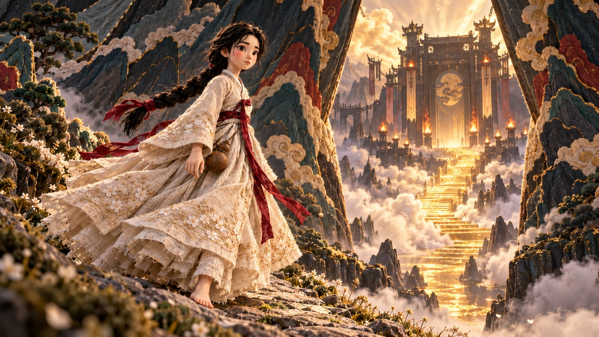
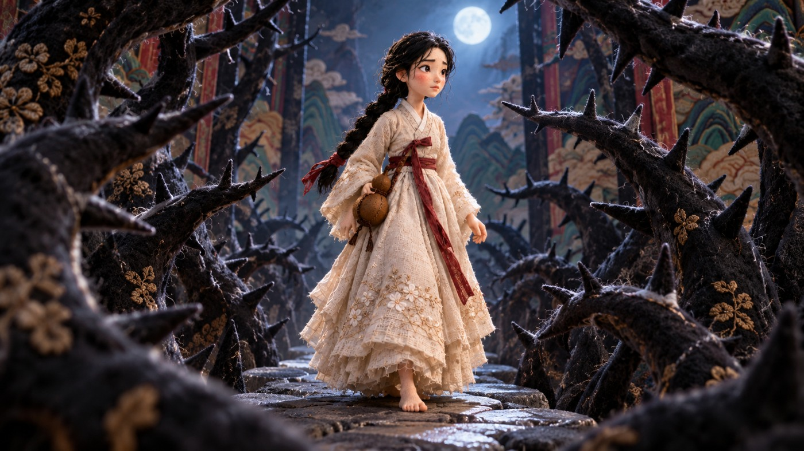
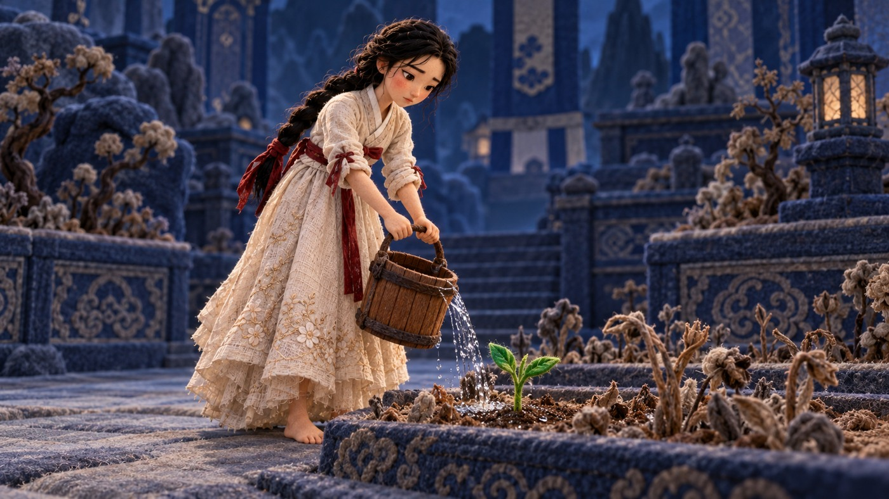
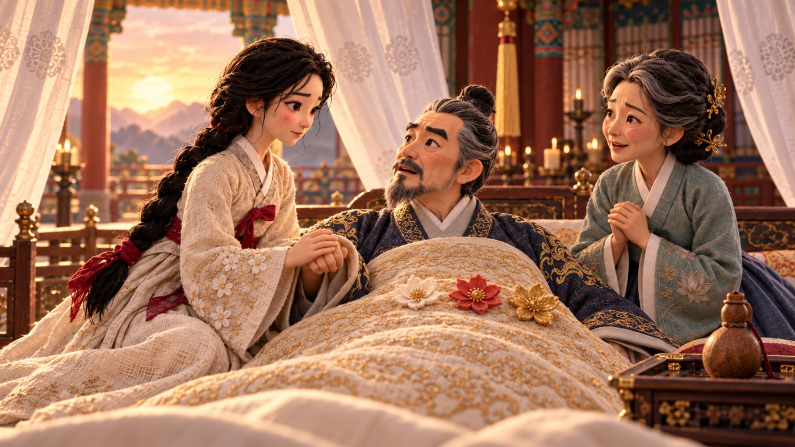

AI로 노래와 장면을 만들고, 편집으로 이야기를 이어가는 과정. 어디서 시작해서 무엇을 확인하면 되는지 차근차근 정리했어요.
〈바리〉 프로젝트의 미술을 활용한 표지 이미지
이 가이드는 〈바리〉를 예로 들어 AI 애니메이션의 제작 흐름을 설명해요. 처음부터 긴 작품을 만들려고 하기보다, 한 장면을 끝까지 완성해보면 각 도구의 역할을 훨씬 쉽게 이해할 수 있어요.
순서
무엇을 하나요?
이야기
인물의 마음과 사건의 순서를 정해요.
노래 · Suno
장면에 맞는 가사와 음악을 만들어요.
이미지
같은 인물과 미술로 컷의 모습을 잡아요.
영상 · Kling / Higgsfield
이미지에 행동과 카메라 움직임을 더해요.
편집 · CapCut
노래 위에 컷을 놓고 자막과 끝맺음을 정리해요.
앞부분은 전체 흐름, 뒷부분은 실제 제작 사례예요. 대표 6컷의 장면 이미지와 저장된 클링 입력 프롬프트를 함께 실었어요. 원본 인물 자료와 내부 작업 도구는 포함하지 않았어요.
이야기와 장면 / 02
먼저, 무엇을 느끼게 할지 한 문장으로 적어요
프롬프트를 길게 쓰기 전에 이야기의 방향부터 잡아두면 좋아요.
〈바리〉에서는 버림받은 아이가 자신을 버린 부모를 구하러 떠나는 여정이 중심이에요. 그래서 예쁜 풍경만 늘리기보다, 외로움과 결심, 고난, 재회가 화면에서도 느껴지도록 장면을 생각했어요.
처음에는 이 정도만 정해도 충분해요
질문
〈바리〉에 대입해보면
누구의 이야기인가요?
부모를 구하러 떠나는 바리의 이야기
무엇이 달라지나요?
망설이던 인물이 스스로 길을 선택해요.
이 장면에서 무엇을 하나요?
멈춰서 숨을 고른 뒤, 다시 걸어요.
끝에 무엇을 보여주나요?
다음에 가야 할 길과 바리의 시선
응용용 예시 · 이야기 정리 요청
다음 이야기를 애니메이션 장면으로 나눠줘.
이야기: [내 이야기의 줄거리]
인물의 감정: [처음의 마음]에서 [끝의 마음]으로 변해.
장면마다 장소, 핵심 행동 하나, 마지막 모습을 적어줘.
노래가 들어갈 부분도 표시해줘.
인물이나 사건을 필요 이상으로 늘리지는 말아줘.
Suno로 노래 만들기 / 03
노래에도 장면의 역할이 있어요
슬픈 노래, 웅장한 노래에서 한 걸음 더 들어가보세요.
이 노래에서 주인공이 무엇을 말하는지 먼저 정해요. 자기 처지를 묻는 노래인지, 길을 떠나겠다는 노래인지에 따라 가사와 목소리, 편곡이 달라져요. 〈바리〉처럼 여러 곡이 이어질 때는 곡마다 역할이 겹치지 않는지도 살펴봐요.
가사를 소리 내서 읽어봐요. 한 줄이 너무 길면 부르기 편하게 나눠요.
Suno의 Custom 모드에서 가사와 음악 스타일을 나눠 넣어요.
결과를 끝까지 듣고 발음, 감정, 후렴, 끝맺음을 비교해요.
쓸 곡을 고른 뒤 음원과 최종 가사를 함께 보관해요.
Suno Styles 응용 예시 · 실제 〈바리〉 원곡 프롬프트는 아니에요
한국어 뮤지컬 발라드. 또렷하고 담담한 여성 솔로 보컬.
처음에는 피아노와 목소리가 가깝게 들리고,
후렴에서 따뜻한 현악이 더해지며 결심이 느껴지게.
마지막은 길게 과장하지 않고 조용한 여운으로 마무리.
말하는 대사는 없이 노래로만.
음악을 고를 때는 이렇게 들어봐요
멜로디가 마음에 들어도 가사를 잘못 부르거나 중요한 말이 안 들리면 다시 확인해요. 화면을 붙일 때는 문장과 숨이 끝나는 곳이 좋은 편집점이 돼요. 화면 길이를 먼저 고정하기보다 음악의 흐름을 들어보세요.
컷 이미지 만들기 / 04
같은 인물, 같은 재질을 계속 이어가요
영상으로 움직이기 전에, 장면 이미지에서 작품의 분위기를 맞춰요.
〈바리〉의 장면 이미지 · 크림색 옷, 붉은 리본, 자수 천과 펠트의 질감
〈바리〉는 손으로 만든 작은 무대 같은 느낌을 기준으로 삼았어요. 옷만 천으로 만드는 데서 끝내지 않고 얼굴과 머리카락, 손에도 펠트의 느낌이 남도록 살펴봐요. 색과 의상, 머리 모양을 먼저 정해두면 다음 장면에서도 비교하기 쉬워요.
이미지 응용 예시 · 기준 이미지와 함께 사용
기준 이미지의 같은 인물을 유지해줘.
미술: 부드러운 무광 펠트, 자수 천, 손으로 만든 작은 무대.
장면: [인물이 있는 곳과 지금 하려는 행동]
구도: [인물의 크기와 카메라 위치]
얼굴, 머리카락, 손에도 섬유 질감이 보이게 해줘.
옷과 머리 모양은 유지하고 글자나 로고는 넣지 마.
Higgsfield에서 Kling으로 / 05
이미지가 정해지면 움직임을 적어요
누가 무엇을 하고, 카메라는 어디로 가는지 나눠서 생각하면 쉬워요.
쓸 이미지를 시작 이미지로 넣고, 필요한 인물 참조를 연결해요.
장면에 필요한 길이와 모델을 고른 뒤 행동을 적어요.
카메라 움직임을 한 가지 정하고, 유지할 것도 덧붙여요.
완성된 영상의 처음, 중간, 끝을 확인해요. 얼굴과 손, 발, 배경이 자연스러운지 살펴봐요.
영상 응용 예시 · 다음 장부터 실제 입력 사례를 볼 수 있어요
시작 이미지에서 이어지는 하나의 장면.
인물은 잠깐 숨을 고른 뒤 길을 따라 두세 걸음 걷는다.
카메라는 같은 거리에서 천천히 뒤따른다.
옷자락과 머리카락은 약한 바람에 움직인다.
얼굴, 옷, 나이와 배경의 구조는 유지한다.
중간 컷 전환이나 새 인물 없이 이어진다.
대사와 배경음악은 없다. 노래는 편집할 때 넣는다.
더 긴 장면은 끝을 보고 이어가요
원하는 장면이 한 번에 생성할 수 있는 길이보다 길면 구간을 나눠요. 앞 영상의 자연스러운 마지막 프레임을 다음 시작 이미지로 쓰고, 같은 방향과 속도로 이어지도록 적어요. 단순히 같은 원본 이미지를 다시 넣으면 동작이 처음부터 반복될 수 있어요.
CapCut에서 완성하기 / 06
노래 위에 장면을 놓으면 작품의 호흡이 보여요
처음부터 효과를 많이 넣기보다, 장면이 자연스럽게 이어지는지 먼저 봐요.
선택한 음원을 먼저 타임라인에 놓아요.
가사와 감정이 바뀌는 곳을 들으며 컷을 배치해요.
컷은 하나씩 따로 두고, 길이와 순서를 조절해요.
연결이 어색한 곳을 다듬은 뒤 자막과 크레딧을 넣어요.
내보낸 파일을 처음부터 끝까지 한 번 더 봐요.
짧은 컷을 계속 반복하면 노래가 흐르는데 화면은 자꾸 끊기는 느낌이 날 수 있어요. 반대로 같은 동작을 너무 오래 보여주면 늘어질 수 있죠. 가사의 한 문장이 끝날 때까지 장면을 유지해보고, 필요한 곳에서 바꿔보세요.
다음은 〈바리〉의 실제 컷 사례예요. 이미지는 저장된 요청에 기록된 장면 이미지고, 프롬프트는 같은 요청의 입력 원문이에요. 계정별 엘리먼트 ID 표기만 가렸고, 한국어 풀이는 이해를 돕기 위해 덧붙였어요.
실제 컷 사례 01 / BARI L01_01
숨을 고르는 바리
걷던 바리가 멈춰 숨을 고르고 앞길을 바라보는 컷이에요. 옷자락과 머리카락만 바람에 움직이도록 범위를 좁혔어요.

장면 이미지 S06.png · Kling 3.0 Pro · 15초 생성 구간
실제 입력 원문 · 인물 엘리먼트 내부 ID 표기 제외
BARI L01_01 - 15 seconds. Premium handcrafted Korean dancheong cloth-and-needle-felt puppet theatre. Use the supplied scene image as the composition and appearance authority for the opening: exact faces, age stages, hairstyles, all costumes, scale, fixed prop counts, fuzzy matte wool fibers and visible stitching. Attached C-version character elements preserve identity without changing the scene image's age, pose or outfit. One spatially continuous shot with smooth deliberate movement and no internal cuts or action resets. Keep all unmentioned people and objects still. No identity drift, extra limbs, duplicate fingers, sliding feet, melted materials, realistic skin, glossy plastic, new props, text, subtitles or watermark. At the end of the opened mountain path, Bari slows to a pause, takes one quiet breath and raises her eyes toward the route ahead. Keep her feet planted during the pause, with only her braid and outer sleeve moving in the breeze. Slowly track a small distance in the established direction, then settle. Do not reopen the mountains or restart the previous walking cycle. Natural diegetic wind, cloth, footsteps and relevant quiet object sounds only. No dialogue, singing, vocals or background music; original songs will be edited separately.
실제 컷 사례 02 / BARI L03_01
가시숲 사이를 걷는 바리
바리는 앞으로 걷고 카메라는 앞에서 뒤로 물러나요. 뒤의 가시 세트만 조금씩 안쪽으로 움직이게 했어요.

장면 이미지 S07_02.png · Kling 3.0 Pro · 15초 생성 구간
실제 입력 원문 · 인물 엘리먼트 내부 ID 표기 제외
BARI L03_01 - 15 seconds. Premium handcrafted Korean dancheong cloth-and-needle-felt puppet theatre. Use the supplied scene image as the composition and appearance authority for the opening: exact faces, age stages, hairstyles, all costumes, scale, fixed prop counts, fuzzy matte wool fibers and visible stitching. Attached C-version character elements preserve identity without changing the scene image's age, pose or outfit. One spatially continuous shot with smooth deliberate movement and no internal cuts or action resets. Keep all unmentioned people and objects still. No identity drift, extra limbs, duplicate fingers, sliding feet, melted materials, realistic skin, glossy plastic, new props, text, subtitles or watermark. Bari advances slowly through the existing felt thorn corridor as the camera smoothly retreats in front of her. After her first careful step, the two thorn scenery panels behind her slide a short distance inward as rigid stage flats. The forward path stays open. She continues one more small step toward the opening ahead. Maintain continuous body position and camera speed throughout; no sudden growth, cloth snagging or panel morphing. Natural diegetic wind, cloth, footsteps and relevant quiet object sounds only. No dialogue, singing, vocals or background music; original songs will be edited separately. This is only the first segment of the longer scene: execute the early portion of the described action slowly, then end on a stable natural pose ready for continuation. Do not rush the whole scene into this segment.
실제 컷 사례 03 / BARI L08_01
문지기의 작은 반응
고개를 작게 끄덕이고 표정이 조금 달라지는 클로즈업이에요. 카메라는 천천히 다가간 뒤 멈춰요.
장면 이미지 S08_03.png · Kling 3.0 Pro · 15초 생성 구간
실제 입력 원문 · 인물 엘리먼트 내부 ID 표기 제외
BARI L08_01 - 15 seconds. Premium handcrafted Korean dancheong cloth-and-needle-felt puppet theatre. Use the supplied scene image as the composition and appearance authority for the opening: exact faces, age stages, hairstyles, all costumes, scale, fixed prop counts, fuzzy matte wool fibers and visible stitching. Attached C-version character elements preserve identity without changing the scene image's age, pose or outfit. One spatially continuous shot with smooth deliberate movement and no internal cuts or action resets. Keep all unmentioned people and objects still. No identity drift, extra limbs, duplicate fingers, sliding feet, melted materials, realistic skin, glossy plastic, new props, text, subtitles or watermark. In the approved close-up, the gatekeeper gives one small deliberate nod, followed by a restrained knowing smile in his eyebrows. His mouth stays relaxed and does not articulate imaginary lyrics. Keep his hands outside the crop and his beard fibers stable. Slow camera push then hold. Natural diegetic wind, cloth, footsteps and relevant quiet object sounds only. No dialogue, singing, vocals or background music; original songs will be edited separately.
실제 컷 사례 04 / BARI L12_01
물을 주는 바리
기존 나무 물통을 천천히 기울여 새싹에 물을 주는 컷이에요. 물이 잦아들면 물통을 안정시키도록 적었어요.

장면 이미지 S09_01.png · Kling 3.0 Pro · 10초 생성 구간
실제 입력 원문 · 인물 엘리먼트 내부 ID 표기 제외
BARI L12_01 - 10 seconds. Premium handcrafted Korean dancheong cloth-and-needle-felt puppet theatre. Use the supplied scene image as the composition and appearance authority for the opening: exact faces, age stages, hairstyles, all costumes, scale, fixed prop counts, fuzzy matte wool fibers and visible stitching. Attached C-version character elements preserve identity without changing the scene image's age, pose or outfit. One spatially continuous shot with smooth deliberate movement and no internal cuts or action resets. Keep all unmentioned people and objects still. No identity drift, extra limbs, duplicate fingers, sliding feet, melted materials, realistic skin, glossy plastic, new props, text, subtitles or watermark. Bari slowly tips the existing wooden bucket to release one narrow stream onto the seedling, then steadies it as the stream thins. Keep her age stage and costume exactly as in this labor reference. Water soaks into soil; the plant does not instantly grow. No life-water gourd or generated year captions. Natural diegetic wind, cloth, footsteps and relevant quiet object sounds only. No dialogue, singing, vocals or background music; original songs will be edited separately.
실제 컷 사례 05 / BARI L23_01
딸을 알아보는 아버지
이미 맞잡은 손을 유지한 채, 왕이 바리를 알아보는 눈빛과 호흡에 집중했어요. 왕비는 조용히 지켜봐요.

장면 이미지 S12_03.png · Kling 3.0 Pro · 15초 생성 구간
실제 입력 원문 · 인물 엘리먼트 내부 ID 표기 제외
BARI L23_01 - 15 seconds. Premium handcrafted Korean dancheong cloth-and-needle-felt puppet theatre. Use the supplied scene image as the composition and appearance authority for the opening: exact faces, age stages, hairstyles, all costumes, scale, fixed prop counts, fuzzy matte wool fibers and visible stitching. Attached C-version character elements preserve identity without changing the scene image's age, pose or outfit. One spatially continuous shot with smooth deliberate movement and no internal cuts or action resets. Keep all unmentioned people and objects still. No identity drift, extra limbs, duplicate fingers, sliding feet, melted materials, realistic skin, glossy plastic, new props, text, subtitles or watermark. Hold the awakened king and adult Bari in their existing hand contact. He recognizes her with a slow shift of his eyes and restrained emotion, while she holds his gaze. The queen watches quietly. One natural breath per figure; no new grasping, speech or repeated awakening. Natural diegetic wind, cloth, footsteps and relevant quiet object sounds only. No dialogue, singing, vocals or background music; original songs will be edited separately.
실제 컷 사례 06 / BARI L27_01
금빛 길에 남기는 여운
인물 없는 금빛 길을 따라 카메라가 천천히 나아가요. 풍경을 유지하고 끝에 제목을 넣을 여백을 남겼어요.
장면 이미지 S12_08.png · Kling 3.0 Pro · 10초 생성 구간
실제 입력 원문 · 인물 엘리먼트 내부 ID 표기 제외
BARI L27_01 - 10 seconds. Premium handcrafted Korean dancheong cloth-and-needle-felt puppet theatre. Use the supplied scene image as the composition and appearance authority for the opening: exact faces, age stages, hairstyles, all costumes, scale, fixed prop counts, fuzzy matte wool fibers and visible stitching. Attached C-version character elements preserve identity without changing the scene image's age, pose or outfit. One spatially continuous shot with smooth deliberate movement and no internal cuts or action resets. Keep all unmentioned people and objects still. No identity drift, extra limbs, duplicate fingers, sliding feet, melted materials, realistic skin, glossy plastic, new props, text, subtitles or watermark. Slowly drift forward along the existing gold cloth path at dawn. The embroidered mountain curtains remain open and all scenery stays rigid. Preserve the original empty-path composition without adding or removing people. Let wind move only fine free fibers and hold a stable sky space at the end for an editor-added title. No generated lettering, logo or credits. Natural diegetic wind, cloth, footsteps and relevant quiet object sounds only. No dialogue, singing, vocals or background music; original songs will be edited separately.
이제 내 장면으로 / 13
처음에는 한 장면이면 충분해요
이야기 하나, 노래 한 구간, 이미지 한 장에서 시작해보세요.
한 장면을 완성하고 나면 어디에서 시간이 걸리고 무엇을 먼저 정해야 하는지 감이 생겨요. 그다음에 장면을 늘리고 곡을 연결해보세요. 프롬프트는 결과를 보며 바뀌는 작업 메모라고 생각하면 조금 편해요.